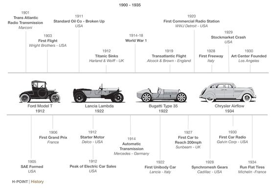
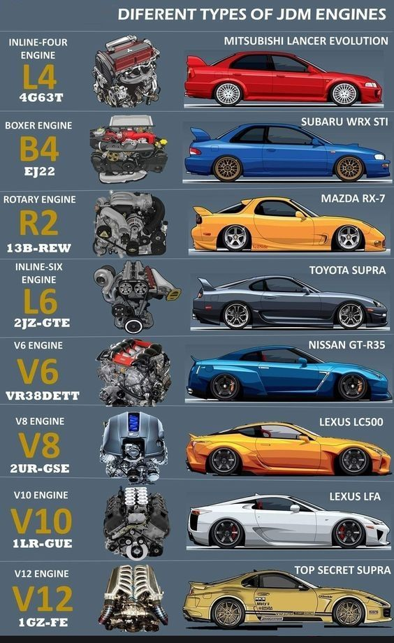

History of Cars
The history of cars can be traced back to the late 18th century, when the first self-propelled vehicles were invented. These early cars were powered by steam engines and were used primarily for transportation of goods and people.
In the early 20th century, the internal combustion engine was invented, which led to the development of the modern automobile. The first mass-produced car, the Ford Model T, was introduced in 1908 and quickly became popular due to its affordability and reliability.
Today, cars are an essential part of modern life, and are used for a wide range of purposes, from commuting to work to long-distance travel.
Types of Cars
There are many different types of cars, including:
- Sedans: four-door cars with a separate trunk
- Coupes: two-door cars with a sloping roofline
- Hatchbacks: cars with a rear door that opens upwards
- SUVs: large, rugged vehicles with four-wheel drive
- Minivans: large vehicles with sliding doors and a spacious interior
Car Technology
Modern cars are equipped with a wide range of advanced technologies, including:
- GPS navigation systems
- Backup cameras
- Collision avoidance systems
- Adaptive cruise control
- Electric and hybrid powertrains